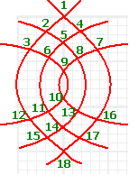
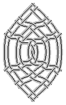
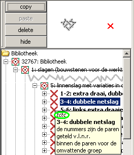
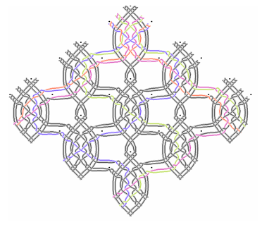

Wil je meer dan variaties op de ingebakken voorbeelden, dan kun je ook zelf een tekening maken. Wat hier beschreven
wordt moet nog veel eenvoudiger gemaakt worden, maar als niemand mee gaat helpen kan dat nog wel even duren. Als je
eenmaal een tekening hebt, kun je er wel eenvoudig eindeloos op variëren. Geef de draden verschillende kleuren en
zie hoe ze totaal anders door een grond kunnen lopen als je een enkele slag verandert. 
voorbereiding
Schets je parentekening op ruitjespapier. Zorg voor zo'n twee ruitjes tussen iedere slag, voor bijvoorbeeld
omkeerslagen is meer ruimte nodig. Nummer de slagen in de volgorde zoals je ze zou klossen. Als voorbeeld gebruiken
we de spin hiernaast. Bewerk een kopie van
niew.xml
met je favoriete programma voor platte tekst of XML bestanden.
Groepen
Onderaan in het bestand vind je de volgende code:
</title>
<!-- put here your instructions -->
</group>
</diagram>
De commentaar-regel vervangen we door onze spin. We maken een groep waarbinnen we de slagen plaatsen. De stippeltjes
moeten we nog verder uitwerken. Deze groep krijgt een unieke naam (een id) zodat hij opnieuw gebruikt kan worden.
Uniek: dus nooit meerdere hondjes Fikkie noemen. Verder moet je aangeven welke paren (pairs) je voor de spin wilt
gebruiken.
</title>
<group id="spin" pairs="1-6">
...
</group>
</group>
</diagram>
Slag voor slag
 Binnen de groep die
we net hebben gemaakt, moet iedere slag afzonderlijk beschreven worden. De eerste slag ziet er als volgt uit:
<!-- 1 --><copy of="ctc" pairs="3-4"><move x="50" y="0"/></copy>
De regel begint met een stukje commentaar: het nummer uit de tekening, dit is een geheugensteuntje voor jezelf.
"ctc" is een Engelse afkorting voor "cruisen traaien cruisen" oftewel een linnenslag. Voor de
paren tellen vanaf het meest linker paar binnen de spin die we voor deze slag nodig hebben. Rest ons nog aan te
geven
waar de slag getekend moet worden: X is de horizontale afstand tot de linkerbovenhoek, Y is de
verticale afstand tot de linkerbovenhoek. Dat wordt dus hokjes tellen, een hokje is tien pixels.
tussenstand
Controleer regelmatig het resultaat en sla het bestand tussendoor op. Copiëer de hele inhoud van het bestand en
gebruik de functie
import - van systeemklembord van BobbinWork. Het duurt even, maar met kleine stapjes
tegelijk zijn vergissingen eenvoudiger te achterhalen en je kunt bij fouten terugvallen op de laatst opgeslagen
versie. Wissel ook af en toe met het tonen van draden of paren. Let ook op de status balk. Voor niet al te grote
tekeningen zou het probleem inmiddels verholpen moeten zijn, maar als de statusbalk vol loopt is het beschikbare
geheugen op en loopt het programma vast, zie ook
programma
starten.

slagen
De slag "ctc" komt overigens uit de "bibliotheek", zie afbeelding. De bibliotheek hebben we bij
de voorbereiding al binnengehaald met een
include opdracht. Mis je bepaalde slagen? Zoek in de bibliotheek
een slag op die lijkt op wat je wilt. Zoek de id (
ctc of
tctc in de voorbeelden) op in de
include
file, copiëer de hele groep en pas deze naar wens aan, denk om een nieuwe unieke id. Kijk ook bij de
anatomie
van de include file. Geef desgewenst ook een kleur
_ aan voor
de parentekening:
</title>
<style color="#AA00FF" width="2" />
<pair start="3,3" end="13.5,13.5" />
Speld
Uiteraard moeten we halverwege ook nog een speld steken.
<pin position="58,83"/>

Variaties
Het resultaat lijkt nog niet zo spannend, maar maak van ctc eens ct of tctc of laat slag 10 weg en 9 een eindje
zakken, of...
Voor je het weet heb je een tiental spinnen of sneeuwvlokken, en netslagen tekenen met potlood vergt de nodige
oefening. Op een vergelijkbare manier als de spinnen zelf, kunnen we ook een groep van spinnen maken. Geef de draden
een kleurtje bij aan het einde een groep:
<new_bobbins nrs="1,2"><style color="#00FF00"/></new_bobbins>
</group>
Voor de traditionele tekeningen met dunne onderbroken lijntjes:
<new_bobbins nrs="3,4,5,6"><style color="#000000" width="1"><shadow color="#FFFFFF" width="5"/></style>
</group>
Kijk maar eens bij de ingebakken
voorbeelden